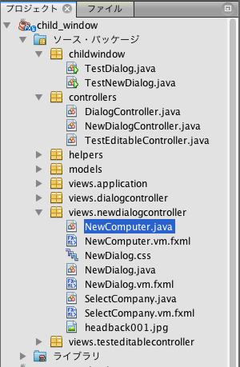
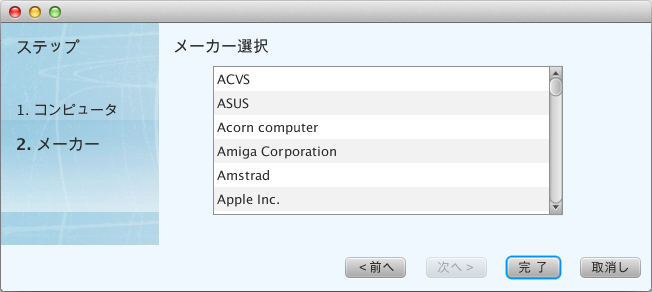

Views¶
viewsパッケージに置くべきファイル¶
viewsパッケージは、MVCアーキテクチャのViewにあたるもので、画面表示に関わる次のファイルを配置します。
- javaファイル
- fxmlファイル
- cssファイル
- イメージファイル
fxmlファイルのcontrollerクラスとしてjavaファイルを作成します。スタイルシートを適用する場合は、同じファイル名でcssファイルを配置します。
これらのファイルは、viewsパッケージ配下に、Creamyコントローラクラス名をすべて小文字に変換した名前でパッケージを作成し、さらにその配下に配置します。
また、クラス名と同じ名前でcssファイルを配備しておけば、スタイルシートの適用処理を記述しなくても自動的に適用されます。
次の例は、新しいコンピュータデータを登録するCreamyアプリケーションのパッケージ構成です。
起動プログラムはchildwindow.TestNewDialogクラスで、Creamyコントローラクラスがcontrollers.NewDialogControllerです。
viewsクラスがviews.newdialogcontrollerパッケージに配置されています。
パッケージ構成例
NewComputer.javaとNewComputer.vm.fxmlでコンピュータデータの登録画面を構成しています。
SelectCompany.javaとSelectCompany.vm.fmlで、メーカー名の選択画面を構成しています。
画面例
初期画面では、NewDialog.javaとNewDialog.vm.fxmlで構成するベースの画面に、NewComputer画面を貼付けた形で表示されます。

「次へ」ボタンをクリックすると、SelectCompany画面に遷移します。
１つのCreamyアプリケーションには、１つ以上のコントローラクラスを作成することができます。その場合は、それぞれのコントローラクラスに対応するviews.<Creamyコントローラクラス名>パッケージを作成します。
継承すべきクラス¶
ここでは、viewsパッケージ以下に配置するjavaクラスを総称して、viewsクラスと呼びます。 viewsクラスは、AvailableActivityクラスを継承して作成します。
AvailableActivityクラス
public class AvailableActivity extends Activity implements Available {
@Override
public void initialize() {}
:
}
記述例
以下のコードは、AvailableActivityを継承してNewComputerクラスを定義した例です。 新しいコンピュータデータを登録する画面に対応するクラスです。
public class NewComputer extends AvailableActivity {
@FXML private TextField name;
@FXML private TextField intoroduced;
@FXML private TextField discontinued;
/**
* @return コンピュータ名 String
*/
protected String getName() {
return name.getText();
}
/**
* @return 発表日 String
*/
protected String getIntoroduced() {
return intoroduced.getText();
}
/**
* @return 製造中止日 String
*/
protected String getDiscontinued() {
return discontinued.getText();
}
}
継承すべきクラスが提供する機能¶
AvailableActivityクラスは、画面表示に必要なCreamy UIコントロールの描画メソッドを提供します。
各コントロールについては、Formコントロール を参照して下さい。
CFGridFormの生成¶
CFGridFormを生成します。pathには、画面遷移先のパスを指定します。
public CFGridForm gridForm(String path) {
return helper.gridForm(path);
}
記述例
次の例では、Applicationコントローラクラスのsaveメソッドを実行するpathを指定してCFGridFormを生成しています。データ送信メソッドはPOST、スタイルシートとしてgird-formを適用しています。
createForm.getChildren().add(
gridForm("/Application/save").method(Request.POST).styleClass("grid-form")
:
CFHFormの生成¶
CFHFormを生成します。pathには、画面遷移先のパスを指定します。
public CFHForm hform(String path) {
return helper.hform(path);
}
記述例
次の例では、Applicationコントローラクラスのdeleteメソッドを実行するpathを指定してCFHFormを生成しています。データ送信メソッドはPOST、CFHFrom内のAlignmentにPos.CENTER_RIGHT（縦方向中央寄せ、横方向右寄せ）を指定しています。
deleteForm.getChildren().add(
hform("/Application/delete/" + computer.getId()).method(Request.POST).align(Pos.CENTER_RIGHT)
:
CFVFormの生成¶
CFVFormを生成します。pathには、画面遷移先のパスを指定します。
public CFVForm vform(String path) {
return helper.vform(path);
}
記述例
CFLabelの生成¶
CFLabelを生成します。textには、表示文字列を指定します。
public LabelBuilder<? extends LabelBuilder> label(String text) {
return helper.label(text);
}
記述例
- text(String name)
CFTextFieldを生成します。nameには、name属性値にあたる文字列を指定します。
- choice(String name)
CFChoiceBoxを生成します。nameには、name属性値にあたる文字列を指定します。
- button(String name)
CFButtonを生成します。nameには、name属性値にあたる文字列を指定します。
- hyperlink(String path)
CFHyperlinkを生成します。pathには、画面遷移先のパスを指定します。
- linkbutton(String path)
CFLinkButtonを生成します。pathには、画面遷移先のパスを指定します。
- submit(String text)
CFSubmitButtonを生成します。pathには、画面遷移先のパスを指定します。
- animate(Node node)
CFAnimationを生成します。nodeには、animation機能を追加するノードを指定します。
記述例¶
以下の例では、AvailableActivityが提供するメソッドを使って画面を作成しています。
createForm.getChildren().add(
gridForm("/Application/save").method(Request.POST).styleClass("grid-form")
.row(label("Computer Name:"),
text("name"),
label("Required").styleClass(this.validationResult.hasError() ? "err-text" : "guide-text"))
.row(label("Introduced Date :"),
text("introduced").format(format),
label("Date (" + DATE_FORMAT + ")").styleClass("guide-text"))
.row(label("Discontinued Date :"),
text("discontinued").format(format),
label("Date (" + DATE_FORMAT + ")").styleClass("guide-text") )
.row(label("Company :"),
choice("company.id").items(Company.options()).prefWidth(275))
.row(hbox(submit("Create this computer").styleClass("btn-primary"),
label(" or "),
linkbutton("/Application/index").text("Cancel").styleClass("btn"))
.padding(new Insets(15,0,15,140)).spacing(5)
.styleClass("actions")
,3)
);